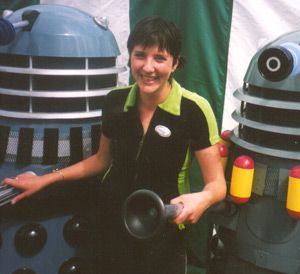

Heidi's Page
Updated 02/10/2002
|  |
Heidi spends her daytimes looking after Indigo and Asher, encouraging them both to grow up.
She is interviewed below by Duncan: |
Hi Heidi. How are you doing?
I'm alright. Can't complain. Much.
How's your day been?
Busy. Tiring. I went to playgroup. With the children.
What are you looking forward to?
Holiday and hedonism. Asher's birthday. A more financially stable situation.
What's your favourite word?
Caress, plinth.
What's your favourite journey?
Along woodland paths to a meadow on a hill, in the orange glow of the evening sun, with wildflowers
and rabbits.
When and where were you happiest?
The 29th of February 1996, in Brighton.
If you could live anywhere, where would it be?
By the sea, somewhere Mediterranean.
What do you think of the first three Assignments of Sapphire and Steel (late 70's, early 80's TV Programme)?
Dire. Plodding. Bad outfits. The only good thing is the retro furniture.
What are you reading?
Wuthering Heights, and Gardening Books.
Back to the main page.